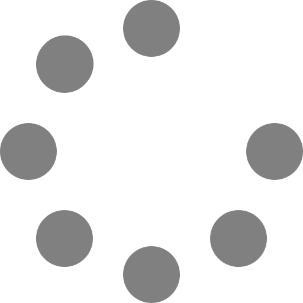
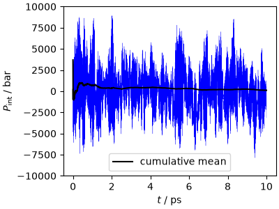
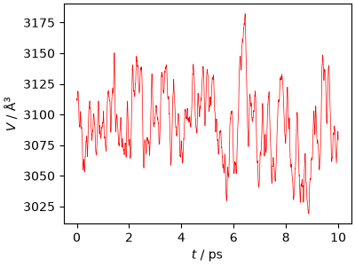
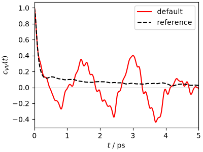
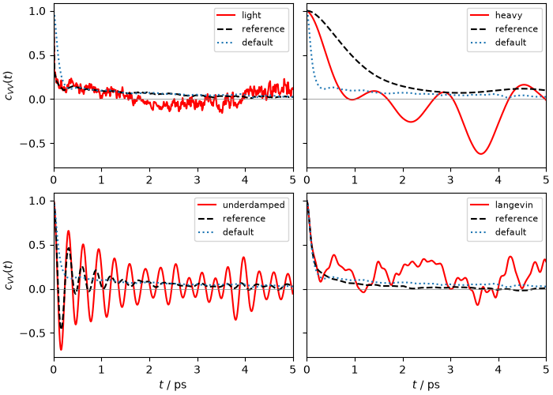
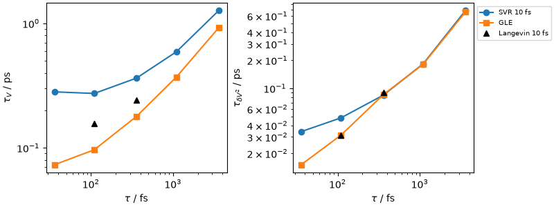
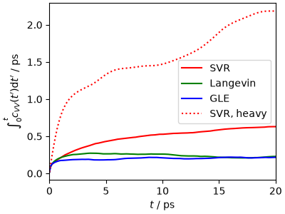
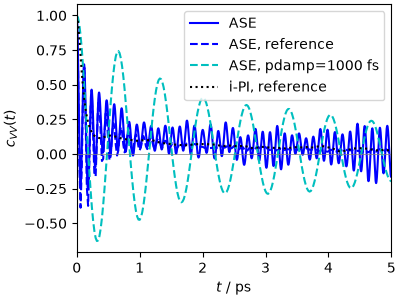
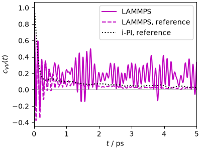
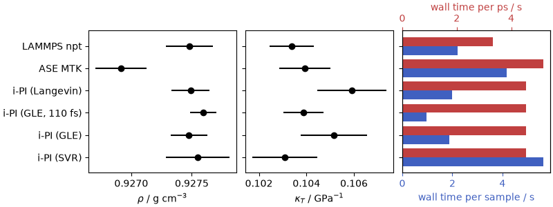

Note
Go to the end to download the full example code.
Constant-pressure MD and barostats¶
- Authors:
Michele Ceriotti @ceriottm
This recipe gives a practical introduction to constant-pressure molecular dynamics simulations, and discusses how to choose the parameters of a barostat to sample efficiently the fluctuations of the volume.
As an example we use a small box of ice Ih, described with the flexible q-TIP4P/f water model, which shows clearly how the barostat interacts with the dynamics of the atoms. This recipe is a companion to the thermostats recipe, which you may want to read first. Constant-pressure simulations are discussed in much detail in the book “Understanding Molecular Simulations” by Daan Frenkel and Berend Smit.
import gzip
import os
import subprocess
import time
import xml.etree.ElementTree as ET
import ase.units
import chemiscope
import ipi
import matplotlib.pyplot as plt
import numpy as np
from ase.calculators.socketio import SocketIOCalculator
from ase.md.nose_hoover_chain import IsotropicMTKNPT
from ase.md.velocitydistribution import thermalize_momenta
from atomistic_cookbook_utils import run_command
from ipi.scripting import InteractiveSimulation
# we will run several simulations at once, so let's avoid oversubscribing the
# CPU
os.environ["OMP_NUM_THREADS"] = "1"
Constant-pressure sampling¶
Most experiments are performed at constant temperature and pressure, and so the natural ensemble to compare with is the isothermal-isobaric one, in which the volume \(V\) of the simulation box fluctuates, \(P(q,p,V)\propto \exp[-\beta(H(q,p;V) + P_\mathrm{ext}V)]\). Constant-pressure simulations are needed whenever one does not know in advance the density of the system, and give access to properties that depend on the fluctuations of the volume, such as the isothermal compressibility \(\kappa_T = \langle \delta V^2\rangle/k_\mathrm{B}T\langle V\rangle\).
Most barostats follow the idea introduced by H.C. Andersen (1980) of treating the volume as an additional dynamical variable. Atomic positions are written in terms of scaled coordinates \(\mathbf{s}_i=\mathbf{q}_i/V^{1/3}\), and the volume is given a fictitious mass \(W\), so that one can write an extended Lagrangian
The volume behaves like a piston, that is pushed by the difference
between the internal pressure
\(P_\mathrm{int}=\sum_i (\mathbf{p}_i^2/m_i +
\mathbf{q}_i\cdot\mathbf{f}_i)/3V\) and the external pressure.
Parrinello and Rahman (1980)
generalized this idea to the full cell matrix \(\mathbf{h}\), so that
the shape of the box can change too, which is necessary for solids
(in i-PI this is the flexible barostat).
Hamilton’s equations for the extended Lagrangian conserve the enthalpy,
so both the atoms and the piston need to be attached to a thermostat
to sample the \(NPT\) ensemble, and some small modifications are needed to
get the distribution of the volume right
(Martyna, Tobias, Klein, JCP (1994)).
Here we use the isotropic barostat by Bussi, Zykova-Timan and Parrinello, JCP (2009), that uses a Langevin thermostat for the piston, and in the implementation discussed in Ceriotti, More, Manolopoulos, CPC (2014).
Warning
The Berendsen barostat, which rescales the volume to drive the internal pressure towards the target, suffers from the same problems as its thermostat counterpart: it does not sample the correct ensemble, and should never be used to compute equilibrium averages.
Barostat time scales¶
There are (at least) three time scales that need to be taken into account to maximise the sampling efficiency of an NPT simulation:
The piston. Linearizing \(P_\mathrm{int}(V)\) around the mean volume, the piston behaves as a harmonic oscillator with frequency \(\omega_V^2=9V/\kappa_T W\). In
i-PIthe mass of the piston is determined by a time constant \(\tau\), and by thebulk_modulusoption, an estimate of \(B=1/\kappa_T\) that need not be very accurate (being off by a factor of 2 changes the period by about 40%). The mass is then \(W=9VB(\tau/2\pi)^2\), so that the period of the volume oscillations is about \(\tau\), for any material and temperature, which makes it easy to choose \(\tau\). Withoutbulk_modulusthe mass is set as for an ideal gas, \(W=3Nk_\mathrm{B}T\tau^2\), and the period becomes \(3.6\tau\sqrt{\rho k_\mathrm{B}T/B}\) (with \(\rho=N/V\)). It then depends on the stiffness and density of the system and, more annoyingly, on the temperature: at 300 K it is \(\approx 1.6\tau\) for water and \(\approx 0.2\tau\) for copper, but it changes as \(\sqrt{T}\) when the temperature does. A piston that is too heavy explores the volume slowly; one that is too light couples with fast molecular vibrations, and the dynamics becomes unstable.The piston thermostat. As for any harmonic oscillator, the optimal coupling is close to critical damping, i.e. for a Langevin thermostat with a time constant \(\tau_\mathrm{cell}\approx 1/2\omega_V \approx 0.08\tau\). A weaker coupling leaves the volume ringing, a stronger one makes it diffusive and slow.
The atoms. The picture above assumes that the internal pressure responds instantaneously to a change of volume. In reality, the volume is coupled to the collective motions of the atoms. In a solid, a change of the volume propagates through the lattice as acoustic waves, which take roughly the time sound needs to cross the box (a few hundred fs for the box we use here). The amplitude of these lattice vibrations also changes the internal pressure, and in a nearly-harmonic crystal long-wavelength vibrations exchange energy with the rest of the system very slowly. A global thermostat, that only acts on the total kinetic energy, cannot help with this, while a local thermostat can. In a liquid, the volume is coupled to the rearrangements of the structure (in water, of the hydrogen-bond network), which take a few ps no matter how the barostat is set up.
In practice, the barostat should be set up so that it does not become the bottleneck, and the atomic thermostat so that the slow collective motions that the volume is coupled to are sampled efficiently.
Running constant-pressure simulations with i-PI¶
We use i-PI together with a LAMMPS driver
to simulate a box containing 96 molecules of ice Ih, described with the
q-TIP4P/f water model, at 270 K.
This is close to the melting point temperature for this model, so the
crystal is quite anharmonic.
The fix ipi command in the LAMMPS input connects it to i-PI
through a UNIX socket.
The box is orthorhombic, and the isotropic barostat we use here scales
it uniformly, keeping its shape fixed. For production simulations of a solid
you would rather let the shape of the cell fluctuate too, using the
flexible barostat, but here we focus on the fluctuations of the volume.
NB: this recipe uses an alpha release of i-PI 4.0.
xmlroot = ET.parse("data/input_npt.xml").getroot()
print(" " + ET.tostring(xmlroot.find(".//motion"), encoding="unicode"))
print(" " + ET.tostring(xmlroot.find(".//ensemble"), encoding="unicode"))
<motion mode="dynamics">
<dynamics mode="npt">
<timestep units="femtosecond"> 0.5 </timestep>
<thermostat mode="svr">
<tau units="femtosecond"> 10 </tau>
</thermostat>
<barostat mode="isotropic">
<tau units="femtosecond"> 360 </tau>
<bulk_modulus units="gigapascal"> 9 </bulk_modulus>
<thermostat mode="langevin">
<tau units="femtosecond"> 30 </tau>
</thermostat>
</barostat>
</dynamics>
</motion>
<ensemble>
<temperature units="kelvin"> 270 </temperature>
<pressure units="bar"> 1 </pressure>
</ensemble>
The <dynamics> section selects npt dynamics, with a stochastic
velocity rescaling (SVR) thermostat on the atoms (being a global thermostat,
it can be strongly coupled without disturbing the dynamics of the atoms),
and contains a <barostat> block that specifies the time scale of the
piston, an estimate of the bulk modulus of ice (9 GPa), and the Langevin
thermostat attached to the piston.
With \(\tau=360\) fs and \(\tau_\mathrm{cell}=30\) fs
the volume oscillates with a period of about 0.36 ps, comparable to the
time it takes sound to cross the box, and the piston is close to critical
damping. The <ensemble> section specifies the target temperature and
pressure.
The simulation can be launched from the command line
i-pi data/input_npt.xml > log &
sleep 2
lmp -in data/in.lmp &
or from Python
ipi_process = None
if not os.path.exists("npt-default.time"):
ipi_process = subprocess.Popen(["i-pi", "data/input_npt.xml"])
time.sleep(4) # wait for i-PI to start
ipi_start = time.time()
lmp_process = subprocess.Popen(["lmp", "-in", "data/in.lmp", "-log", "none"])
… and wait for the simulation to finish (it’ll take a minute or two).
We also store the wall-clock time, to compare the cost of different codes
at the end of the recipe. LAMMPS exits when i-PI is done, so we wait
for it first: if it fails, i-PI would otherwise wait forever for a client.
def wait_for(ipi_process, lmp_process):
"""Waits for i-PI and its LAMMPS client, and stops i-PI if LAMMPS fails"""
if lmp_process.wait() != 0:
ipi_process.kill()
raise RuntimeError(f"LAMMPS exited with status {lmp_process.returncode}")
ipi_process.wait()
if ipi_process is not None:
wait_for(ipi_process, lmp_process)
np.savetxt("npt-default.time", [time.time() - ipi_start])
Other ways to run i-PI¶
We used the most traditional setup above: i-PI running on the CPU,
connected to a separate LAMMPS process through a socket. You can
run the same simulation in a few other ways, which can be much faster
in other cases. Most of them need a GPU, so we only describe them here,
except for a short CPU test of InteractiveSimulation at the end.
GPU integrator. If you have a GPU you can also store the state of the simulation and run the integrator on the GPU, by launching
i-pi --backend torch --device cuda --jit data/input_npt.xml
where --backend torch stores and processes all the arrays with
PyTorch, --device cuda puts them on the GPU, and --jit records
the MD steps as CUDA graphs and replays them, to reduce the overhead
of launching many small GPU operations.
For a small system and a cheap potential like this this is not
worth it, as the cost of the integrator is small compared to that of the
force evaluation in LAMMPS and of the communication with it, but it
pays off for large simulations with machine-learning potentials that are
also evaluated on the GPU.
Metatomic models. The q-TIP4P/f potential is also available as a
metatomic
model written in PyTorch (the metatomic-qtip4pf package, which is installed
in the environment of this recipe). i-PI can evaluate it directly,
without a separate client process, so that on a GPU both the integrator
and the force evaluation run on the device. You can export the model
(the exported file depends on the version of PyTorch, so it is not
distributed with the recipe) and launch i-PI with
metatomic-qtip4pf --ewald-accuracy 1e-5 -o qtip4pf.pt
i-pi --backend torch --device cuda --jit data/input_npt_metatomic.xml
The cutoff (9 Å by default) and the accuracy of the Ewald sum are fixed
when the model is exported, and are chosen here to match the LAMMPS
input. The input data/input_npt_metatomic.xml is the same as
data/input_npt.xml, except for the forcefield section, which loads the
model inside i-PI. The template structure is only used to read
the atom types, and device:cuda evaluates the model on the GPU.
data/input_npt_metatomic_cpu.xml is identical, except that it
uses device:cpu (and a different output prefix), so that it can be
run on a machine without a GPU.
The ffdirect metatomic driver is not limited to this simple potential:
it can be used in exactly the same way with any metatomic model, including
machine-learning interatomic potentials, as discussed e.g. in the
PET-MAD recipe.
xmlroot = ET.parse("data/input_npt_metatomic.xml").getroot()
print(" " + ET.tostring(xmlroot.find("ffdirect"), encoding="unicode"))
<ffdirect name="qtip4pf" pbc="false">
<pes> metatomic </pes>
<parameters> {template:data/ice_96.extxyz,model:qtip4pf.pt,device:cuda} </parameters>
</ffdirect>
Interactive simulations. Finally, you can drive i-PI from
Python, without launching it as a separate process, using
InteractiveSimulation. This is particularly convenient together
with a forcefield that is evaluated inside i-PI, such as the
metatomic model above, because no client process needs to be started.
Here we run a short test on the CPU: first we export the model
(if it has not been exported already) …
if not os.path.exists("qtip4pf.pt"):
run_command("metatomic-qtip4pf --ewald-accuracy 1e-5 -o qtip4pf.pt")
… and then we create the simulation. The backend, device and compilation
options are given when creating the simulation object, e.g. you could use
device="cuda", jit=True together with data/input_npt_metatomic.xml
to run the whole simulation on the GPU.
with open("data/input_npt_metatomic_cpu.xml") as f:
sim = InteractiveSimulation(f, backend="torch", device="cpu")
@system: Initializing system object
@simulation: Initializing simulation object
@ RANDOM SEED: The seed used in this calculation was 32342
@init_file: Initializing from file data/ice_96.extxyz. Dimension: length, units: automatic, cell_units: automatic
@init_file: Initializing from file data/ice_96.extxyz. Dimension: length, units: automatic, cell_units: automatic
@init_file: Initializing from file data/ice_96.extxyz. Dimension: length, units: automatic, cell_units: automatic
@init_file: Initializing from file data/ice_96.extxyz. Dimension: length, units: automatic, cell_units: automatic
@init_file: Initializing from file data/ice_96.extxyz. Dimension: length, units: automatic, cell_units: automatic
@initializer: Resampling velocities at temperature 270.0 kelvin
@system.bind: Binding the forces
sim.run(n) advances the simulation by n steps, writing outputs as
specified in the input file, and the current state can be inspected
between calls with sim.properties and sim.get_structures.
We only run 100 steps, just to check that everything works.
sim.run(100)
print(f"Volume after 100 steps: {sim.properties('volume'):.1f} Å^3")
@simulation.run: Average timings at MD step 0. t/step: 9.69055e-02
@open_backup: Backup performed: RESTART -> #RESTART#0#
Volume after 100 steps: 3121.8 Å^3
Analysis of the trajectory¶
The box changes size along the trajectory, by a few percent
traj_data = ipi.read_trajectory("npt-default.pos_0.xyz")
chemiscope.show(
traj_data,
mode="structure",
settings=chemiscope.quick_settings(
trajectory=True, structure_settings={"unitCell": True}
),
)

The instantaneous pressure fluctuates by thousands of bars, as one would expect for a small, stiff system. It is the average pressure that converges to the target value of 1 bar.
output_data, output_desc = ipi.read_output("npt-default.out")
fig, ax = plt.subplots(1, 1, figsize=(4, 3), constrained_layout=True)
ax.plot(output_data["time"], output_data["pressure_md"], "b-", lw=0.2)
ax.plot(
output_data["time"],
np.cumsum(output_data["pressure_md"]) / np.arange(1, len(output_data["time"]) + 1),
"k-",
label="cumulative mean",
)
ax.set_xlabel(r"$t$ / ps")
ax.set_ylabel(r"$P_\mathrm{int}$ / bar")
ax.set_ylim(-1e4, 1e4)
ax.legend()
plt.show()

The volume relaxes quickly and then fluctuates around its mean value
fig, ax = plt.subplots(1, 1, figsize=(4, 3), constrained_layout=True)
ax.plot(output_data["time"], output_data["volume"], "r-", lw=0.5)
ax.set_xlabel(r"$t$ / ps")
ax.set_ylabel(r"$V$ / Å$^3$")
plt.show()

To assess the efficiency of sampling, we compute the autocorrelation function of the volume, \(c_{VV}(t)=\langle \delta V(t)\delta V(0)\rangle/\langle\delta V^2\rangle\), and its integral, the autocorrelation time \(\tau_V\). A trajectory of length \(T\) contains about \(T/2\tau_V\) independent samples of the volume. Note that the fluctuations \(\delta V = V - \langle V\rangle\) should be computed relative to the converged mean volume. If one uses the mean of a short trajectory, part of the slow fluctuations of the volume are absorbed into the mean, and \(c_{VV}\) appears to decay faster than it actually does.
def autocorrelation(x, maxlag, mean):
"""Normalized autocorrelation function of the fluctuations of x around mean"""
x = np.asarray(x) - mean
n = len(x)
f = np.fft.rfft(x, n=2 * n)
acf = np.fft.irfft(f * np.conj(f))[:maxlag] / np.arange(n, n - maxlag, -1)
return acf / acf[0]
We take the mean volume, and compare the ACF, with the results from much
longer simulations with the same parameters (eight independent runs of
250 ps, see data/run_scan.py). Even though the short run is noisy, it
agrees well with the reference. Most of the decay happens within a few
hundred fs, as the piston oscillates and the lattice responds to it, but
\(c_{VV}\) then has a long tail, that decays over a few ps. Its
amplitude is small, but it is long-lived, and so it contributes to
\(\tau_V\) as much as the initial decay.
def load_reference():
"""Loads the volume ACFs and the summary of the reference runs"""
acf = np.loadtxt("data/reference_vacf.dat.gz")
with gzip.open("data/reference_vacf.dat.gz", "rt") as f:
names = f.readline().split()[2:]
acf = {name: acf[:, [0, i + 1]] for i, name in enumerate(names)}
scan = np.genfromtxt("data/reference_scan.dat", dtype=None, encoding="utf-8")
scan = {row[0]: np.array(list(row)[1:], dtype=float) for row in scan}
with open("data/reference_scan.dat") as f:
v_mean = float(f.readline().split()[-2]) # converged mean volume, in Å^3
return acf, scan, v_mean
ref_acf, ref_scan, V_MEAN = load_reference()
def ref_name(tau, tau_cell, thermostat=("svr", 10)):
"""Label of the reference run with these parameters"""
return f"ice_ipi_b{tau}_c{tau_cell:g}_{thermostat[0]}{thermostat[1]}"
def plot_acf(ax, name, style, label):
"""Plots the volume ACF of a reference run"""
ax.plot(ref_acf[name][:, 0], ref_acf[name][:, 1], style, label=label)
EQUIL = 2.0 # ps of equilibration to discard
dt = output_data["time"][1] - output_data["time"][0]
lags = np.arange(int(5.0 / dt)) * dt
volume = output_data["volume"][output_data["time"] > EQUIL]
fig, ax = plt.subplots(1, 1, figsize=(4, 3), constrained_layout=True)
ax.plot(lags, autocorrelation(volume, len(lags), V_MEAN), "r-", label="default")
plot_acf(ax, ref_name(360, 30), "k--", "reference")
ax.axhline(0, color="gray", lw=0.5)
ax.set_xlim(0, 5)
ax.set_xlabel(r"$t$ / ps")
ax.set_ylabel(r"$c_{VV}(t)$")
ax.legend()
plt.show()

Tuning the barostat¶
Let’s see what happens when we change the parameters. We generate modified inputs, each with a different output prefix and socket address, so that we can run the simulations at the same time.
def make_input(name, tau, tau_cell, thermostat=("svr", 10)):
xml = ET.parse("data/input_npt.xml")
root = xml.getroot()
root.find("output").set("prefix", name)
root.find("ffsocket/address").text = name
dynamics = root.find("system/motion/dynamics")
dynamics.find("thermostat").set("mode", thermostat[0])
dynamics.find("thermostat/tau").text = str(thermostat[1])
dynamics.find("barostat/tau").text = str(tau)
dynamics.find("barostat/thermostat/tau").text = str(tau_cell)
xml.write(f"{name}.xml")
# a light and a heavy piston, an under-damped piston,
# and an aggressive Langevin thermostat on the atoms
variants = {
"light": dict(tau=36, tau_cell=3),
"heavy": dict(tau=3600, tau_cell=300),
"underdamped": dict(tau=360, tau_cell=1000),
"langevin": dict(tau=360, tau_cell=30, thermostat=("langevin", 10)),
}
processes = []
for name, params in variants.items():
if not os.path.exists(f"npt-{name}.out"):
make_input(f"npt-{name}", **params)
ipi_process = subprocess.Popen(["i-pi", f"npt-{name}.xml"])
time.sleep(4) # wait for i-PI to start
lmp_process = subprocess.Popen(
["lmp", "-in", "data/in.lmp", "-log", "none"]
+ ["-var", "address", f"npt-{name}"]
)
processes.append((ipi_process, lmp_process))
… and wait
for ipi_process, lmp_process in processes:
wait_for(ipi_process, lmp_process)
The results are consistent with the discussion above. A light piston gives a very fast initial decay, but cannot make the lattice respond faster, and has the same tail as the default. A heavy piston explores the volume slowly, and an under-damped piston makes \(c_{VV}\) oscillate with a period of about \(\tau\), as expected. Perhaps surprisingly, a strong local Langevin thermostat on the atoms reduces the tail: it thermalizes the slow lattice vibrations that the global SVR thermostat cannot reach.
fig, axes = plt.subplots(2, 2, figsize=(7, 5), constrained_layout=True, sharey=True)
for ax, (name, params) in zip(axes.flatten(), variants.items()):
data, _ = ipi.read_output(f"npt-{name}.out")
volume = data["volume"][data["time"] > EQUIL]
ax.plot(lags, autocorrelation(volume, len(lags), V_MEAN), "r-", label=name)
plot_acf(ax, ref_name(**params), "k--", "reference")
plot_acf(ax, ref_name(360, 30), ":", "default")
ax.axhline(0, color="gray", lw=0.5)
ax.set_xlim(0, 5)
ax.legend(fontsize=8)
for ax in axes[1]:
ax.set_xlabel(r"$t$ / ps")
for ax in axes[:, 0]:
ax.set_ylabel(r"$c_{VV}(t)$")
plt.show()

A more systematic picture can be obtained from the long reference runs, that scan \(\tau\) (keeping the piston critically damped, \(\tau_\mathrm{cell}\approx 0.08\tau\)), using either SVR or a “smart-sampling” generalized Langevin equation (GLE) thermostat on the atoms (see the thermostats recipe), as well as a strongly-coupled Langevin thermostat. We plot the autocorrelation time of the volume \(\tau_V\), that determines the error in the mean volume, and that of \(\delta V^2\), that determines the error in \(\kappa_T\) (both estimated by block averaging over 10 ps blocks).
# (tau, tau_cell) of the reference runs, in fs
scan_taus = [(36, 3), (110, 9), (360, 30), (1100, 90), (3600, 300)]
fig, ax = plt.subplots(1, 2, figsize=(8, 3), constrained_layout=True)
for thermostat, label, style, taus in [
(("svr", 10), "SVR 10 fs", "o-", scan_taus),
(("gle", "smart"), "GLE", "s-", scan_taus),
(("langevin", 10), "Langevin 10 fs", "k^", scan_taus[1:3]),
]:
names = [ref_name(t, tc, thermostat) for t, tc in taus]
for i in range(2):
ax[i].loglog(
[t for t, _ in taus],
[ref_scan[n][5 + i] for n in names],
style,
label=label,
)
for a in ax:
a.set_xlabel(r"$\tau$ / fs")
ax[0].set_ylabel(r"$\tau_V$ / ps")
ax[1].set_ylabel(r"$\tau_{\delta V^2}$ / ps")
ax[1].legend(fontsize=7, loc="upper left", bbox_to_anchor=(1, 1))
plt.show()

With SVR, the piston time scale makes little difference, as long as the period is below about 1 ps: the sampling of the volume is limited by the atoms. The GLE thermostat, which is designed to sample efficiently vibrations over a broad range of frequencies, reduces \(\tau_V\) by a factor between two and four, unless the piston is very heavy. Then the piston becomes the bottleneck, and its time scale matters more: heavy pistons clearly degrade the sampling, and even with the default \(\tau=360\) fs, \(\tau_V\) is about twice as long as with pistons with a period of about 100 fs or less.
The slow tail also makes \(\tau_V\) hard to converge. Plotting the integral of \(c_{VV}\) up to a time \(t\) shows that with SVR it keeps growing for several ps, while with GLE (and Langevin) it levels off after a couple of ps, at a much smaller value. Note that even 1-2 ns of reference runs is not long enough to compute these integrals precisely: comparing independent runs is the safest way to estimate the statistical error on the mean volume.
fig, ax = plt.subplots(1, 1, figsize=(4, 3), constrained_layout=True)
for name, style, label in [
(ref_name(360, 30), "r-", "SVR"),
(ref_name(360, 30, ("langevin", 10)), "g-", "Langevin"),
(ref_name(360, 30, ("gle", "smart")), "b-", "GLE"),
(ref_name(3600, 300), "r:", "SVR, heavy"),
]:
t, c = ref_acf[name][:, 0], ref_acf[name][:, 1]
ax.plot(t, np.cumsum(c) * (t[1] - t[0]), style, label=label)
ax.set_xlim(0, 20)
ax.set_xlabel(r"$t$ / ps")
ax.set_ylabel(r"$\int_0^t c_{VV}(t')\mathrm{d}t'$ / ps")
ax.legend()
plt.show()

Constant-pressure simulations with ASE¶
The atomic simulation environment (ASE)
has its own constant-pressure integrators. We use IsotropicMTKNPT,
which implements the MTK equations with Nosé-Hoover chains for both the
atoms and the piston. To use exactly the same potential, we use a
SocketIOCalculator, that makes ASE act as a server for the same
protocol used by i-PI, and connect LAMMPS to it.
Alternatively, ASE can use the metatomic version of q-TIP4P/f discussed
above, which gives the same energies and forces, without having to launch
LAMMPS
from metatomic.torch.ase_calculator import MetatomicCalculator
atoms.calc = MetatomicCalculator("qtip4pf.pt", device="cpu")
atoms = ipi.read_trajectory("data/ice_96.extxyz")[0]
thermalize_momenta(atoms, temperature_K=270, rng=np.random.default_rng(12345))
def launch_lammps(atoms, properties, port, unixsocket):
"""Called by the calculator to start the client, once the socket is ready"""
return subprocess.Popen(
["lmp", "-in", "data/in.lmp", "-log", "none", "-screen", "none"]
+ ["-var", "address", unixsocket]
)
The pdamp parameter determines the mass of the piston as for an
ideal gas, \(W\propto Nk_\mathrm{B}T\,\mathrm{pdamp}^2\), so (as
discussed above for i-PI without bulk_modulus) the period of the
volume oscillations depends on the material and on the temperature: for
our ice it is between \(0.6\) and \(0.7\,\mathrm{pdamp}\).
tdamp sets the time scale of the Nosé-Hoover thermostats.
ASE_PDAMP = 200 # fs
if not os.path.exists("ase-mtk.time"):
calc = SocketIOCalculator(unixsocket="ase-mtk", launch_client=launch_lammps)
atoms.calc = calc
dyn = IsotropicMTKNPT(
atoms,
timestep=0.5 * ase.units.fs,
temperature_K=270,
pressure_au=1.0 * ase.units.bar,
tdamp=100 * ase.units.fs,
pdamp=ASE_PDAMP * ase.units.fs,
)
ase_data = []
dyn.attach(
lambda: ase_data.append([dyn.get_time() / ase.units.fs, atoms.get_volume()]),
interval=4,
)
ase_start = time.time()
dyn.run(40000)
calc.close()
np.savetxt("ase-mtk.dat", np.array(ase_data))
np.savetxt("ase-mtk.time", [time.time() - ase_start])
/home/runner/work/atomistic-cookbook/atomistic-cookbook/.nox/barostats/lib/python3.12/site-packages/ase/calculators/socketio.py:404: UserWarning: Subprocess exited with status 1
warnings.warn('Subprocess exited with status {}'
With pdamp = 200 fs, IsotropicMTKNPT samples the volume about as
efficiently as i-PI with SVR (slightly better, in fact): the
Nosé-Hoover chain attached to the atoms is, as far as the slow lattice
vibrations are concerned, similar to a global thermostat. The piston is
attached to a deterministic Nosé-Hoover chain, that does a poor job at
damping its oscillations: the volume oscillates with a period of about
0.12 ps, and with a heavier piston (e.g. pdamp = 1000 fs) it rings for
several ps, as shown by the reference curve.
ase_data = np.loadtxt("ase-mtk.dat")
ase_volume = ase_data[ase_data[:, 0] * 1e-3 > EQUIL, 1]
fig, ax = plt.subplots(1, 1, figsize=(4, 3), constrained_layout=True)
ax.plot(lags, autocorrelation(ase_volume, len(lags), V_MEAN), "b-", label="ASE")
plot_acf(ax, f"ice_ase_mtk_b{ASE_PDAMP}", "b--", "ASE, reference")
plot_acf(ax, "ice_ase_mtk_b1000", "c--", "ASE, pdamp=1000 fs")
plot_acf(ax, ref_name(360, 30), "k:", "i-PI, reference")
ax.axhline(0, color="gray", lw=0.5)
ax.set_xlim(0, 5)
ax.set_xlabel(r"$t$ / ps")
ax.set_ylabel(r"$c_{VV}(t)$")
ax.legend()
plt.show()

Constant-pressure simulations with LAMMPS¶
LAMMPS implements barostats natively. The most commonly used is
fix npt, which implements the MTK equations with Nosé-Hoover chains,
similar to the ASE integrator above.
Note that (with units real) the pressure is in atmospheres, and that
Pdamp sets the mass of the piston as for an ideal gas, like pdamp
in ASE. We use Pdamp = 200 fs, rather than the 1000 time steps
suggested in the LAMMPS manual, which would give a heavy and
poorly-damped piston, as we have seen for ASE.
with open("data/in_npt_mtk.lmp", "r") as file:
print("".join(line for line in file if line.startswith("fix")))
fix 1 all npt temp 270.0 270.0 100.0 iso 0.986923 0.986923 200.0
fix out all ave/time 4 1 4 v_V v_P v_T file lmp-mtk.dat
The simulation can be run as usual
if not os.path.exists("lmp-mtk.time"):
lmp_start = time.time()
run_command("lmp -in data/in_npt_mtk.lmp -log none")
np.savetxt("lmp-mtk.time", [time.time() - lmp_start])
fix npt behaves similarly to the ASE integrator, as expected, including
the fast oscillations of the under-damped piston.
fig, ax = plt.subplots(1, 1, figsize=(4, 3), constrained_layout=True)
lmp_data = np.loadtxt("lmp-mtk.dat")
lmp_volume = lmp_data[lmp_data[:, 0] * 0.5e-3 > EQUIL, 1]
ax.plot(lags, autocorrelation(lmp_volume, len(lags), V_MEAN), "m-", label="LAMMPS")
plot_acf(ax, "ice_lmp_mtk_b200", "m--", "LAMMPS, reference")
plot_acf(ax, ref_name(360, 30), "k:", "i-PI, reference")
ax.axhline(0, color="gray", lw=0.5)
ax.set_xlim(0, 5)
ax.set_xlabel(r"$t$ / ps")
ax.set_ylabel(r"$c_{VV}(t)$")
ax.legend()
plt.show()

LAMMPS with metatomic¶
The LAMMPS build used in this recipe (lammps-metatomic) can also
evaluate metatomic models, through pair_style metatomic, so that the
metatomic version of q-TIP4P/f (or any other metatomic model, including
machine-learning potentials) can be combined with the native LAMMPS
integrators. The input data/in_npt_metatomic.lmp uses the same
fix npt setup as above, but computes all the interactions with
the model exported earlier. A few details are worth noting: the model
expects the atoms to be ordered as O, H, H, so LAMMPS must not sort
them (atom_modify sort 0 0.0); bonds and angles are still read from
the data file, but their energy is set to zero, as the intra-molecular
terms are part of the model; special_bonds lj/coul 1.0 1.0 1.0 keeps
the bonded pairs in the neighbor list that is passed to the model; and
pair_style metatomic has to be defined after read_data.
keywords = ("atom_modify", "bond_style", "angle_style", "special_bonds", "pair_")
with open("data/in_npt_metatomic.lmp", "r") as file:
print("".join(line for line in file if line.startswith(keywords)))
atom_modify sort 0 0.0
bond_style zero nocoeff
angle_style zero nocoeff
special_bonds lj/coul 1.0 1.0 1.0
pair_style metatomic qtip4pf.pt device cpu
pair_coeff * * 8 1
As for InteractiveSimulation, we only run a few steps to check that
everything works, as the metatomic model is slower than the native
LAMMPS implementation on a CPU.
run_command("lmp -in data/in_npt_metatomic.lmp -var nsteps 100 -log none")
lmp_mta_data = np.loadtxt("lmp-metatomic.dat")
print(f"Volume after 100 steps: {lmp_mta_data[-1, 1]:.1f} Å^3")
Volume after 100 steps: 3062.7 Å^3
How do they compare?¶
All these barostats should sample the same ensemble. We can check this by comparing density and compressibility from the long reference runs (with error bars estimated from the autocorrelation times, using the integral of \(c_{VV}\) up to 20 ps for the volume). Taking into account the cost of each code per ps of simulation (measured from the runs performed in this recipe), we can also estimate how long it takes to generate an uncorrelated sample of the volume, which is the ultimate measure of the efficiency of a simulation setup. The timings should not be taken too literally: there can be high variability between runs, and they depend strongly on the hardware and on how the codes are compiled and set up.
kT = ase.units.kB * 270 # eV
mass = 96 * 18.015 / ase.units.mol # g
best = {
"i-PI (SVR)": ref_name(360, 30),
"i-PI (GLE)": ref_name(360, 30, ("gle", "smart")),
"i-PI (GLE, 110 fs)": ref_name(110, 9, ("gle", "smart")),
"i-PI (Langevin)": ref_name(360, 30, ("langevin", 10)),
"ASE MTK": f"ice_ase_mtk_b{ASE_PDAMP}",
"LAMMPS npt": "ice_lmp_mtk_b200",
}
# wall-clock time per ps for each code, measured from the runs in this recipe
cost_per_ps = {
"ipi": np.loadtxt("npt-default.time") / output_data["time"][-1],
"ase": np.loadtxt("ase-mtk.time") / (ase_data[-1, 0] * 1e-3),
"lmp": np.loadtxt("lmp-mtk.time") / (lmp_data[-1, 0] * 0.5e-3),
}
for code, cost_ps in cost_per_ps.items():
print(f"{code:>4s}: {cost_ps:6.2f} s/ps")
rho, rho_err, kappa, kappa_err, cost = [], [], [], [], []
for name in best.values():
vmean, vvar, _, tau_v2, length = ref_scan[name][3:8]
tau_v, n_runs = ref_scan[name][10], ref_scan[name][13]
length = length * n_runs # total length of the independent runs
rho.append(mass / (vmean * 1e-24))
rho_err.append(rho[-1] * np.sqrt(2 * tau_v * vvar / length) / vmean)
kappa.append(vvar / (kT * vmean) * ase.units.GPa)
kappa_err.append(kappa[-1] * np.sqrt(4 * tau_v2 / length))
cost.append(cost_per_ps[name.split("_")[1]] * 2 * tau_v)
y = np.arange(len(best))
fig, ax = plt.subplots(1, 3, figsize=(8, 3), constrained_layout=True, sharey=True)
ax[0].errorbar(rho, y, xerr=rho_err, fmt="ko")
ax[0].set_xlabel(r"$\rho$ / g cm$^{-3}$")
ax[0].locator_params(axis="x", nbins=3)
ax[1].errorbar(kappa, y, xerr=kappa_err, fmt="ko")
ax[1].set_xlabel(r"$\kappa_T$ / GPa$^{-1}$")
# wall time per independent sample (bottom axis, blue) and per ps (top axis,
# red)
ax[2].barh(y - 0.2, cost, height=0.4, color="#4060c0")
ax[2].set_xlabel("wall time per sample / s", color="#4060c0")
ax[2].tick_params(axis="x", colors="#4060c0")
ax_raw = ax[2].twiny()
ax_raw.barh(
y + 0.2,
[cost_per_ps[name.split("_")[1]] for name in best.values()],
height=0.4,
color="#c04040",
)
ax_raw.set_xlabel("wall time per ps / s", color="#c04040")
ax_raw.tick_params(axis="x", colors="#c04040")
ax[0].set_yticks(y, list(best.keys()))
plt.show()

ipi: 4.54 s/ps
ase: 5.17 s/ps
lmp: 3.33 s/ps
All setups agree on the density (to better than 0.1%) and on the
compressibility (within the statistical error). The cost per step is
similar for the three codes: LAMMPS, that runs natively, is somewhat
faster, while i-PI and ASE pay a modest overhead for the socket
communication, which becomes negligible for more expensive potentials.
The cost per independent sample depends much more on the choice of the
thermostat for the atoms: with a GLE, i-PI needs 1.5 to 3 times fewer
steps per uncorrelated volume sample than the setups that use global (SVR
or Nosé-Hoover) thermostats, and 3 to 6 times fewer with a lighter piston
(\(\tau=110\) fs), which more than makes up for the overhead of the
socket communication.
Keep in mind that in a liquid the fluctuations of the volume are coupled to the slow rearrangements of its structure, so whatever the parameters of the barostat, the volume decorrelates over several ps (in liquid water, the autocorrelation time is a few times longer than in ice), and much longer simulations are needed to converge its average and fluctuations. In this case a strongly-coupled Langevin thermostat slows down diffusion, and with it the sampling of the volume.
In summary: choose the time scale of the piston based on an estimate of the period of the volume oscillations (or shorter, if the atoms are thermostatted efficiently, so that the piston becomes the bottleneck), damp the piston close to critical damping, be careful about the meaning of the barostat parameters in different codes, and pay as much attention to the atomic thermostat as to the barostat. Check the volume autocorrelation function over long times, and use independent runs to estimate the error on volume-dependent averages.
Total running time of the script: (4 minutes 31.111 seconds)